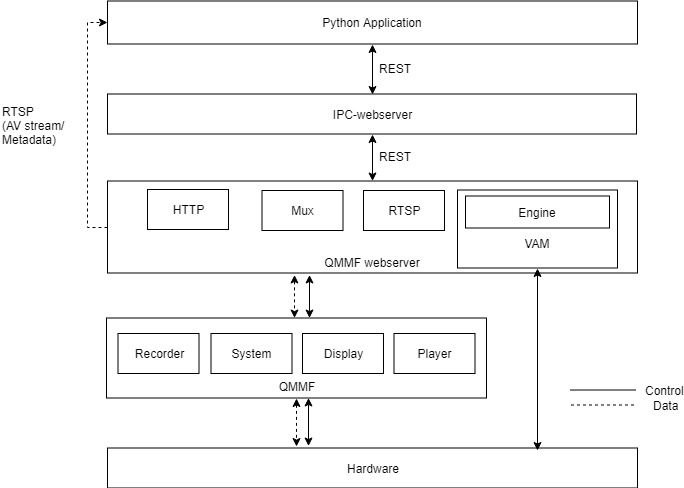

Introduction¶
This package provides QTI’s python SDK for developing IOT connected camera applications. The SDK provides simplified python APIs on top of QTI’s IP Camera webserver (IPC-webserver). QTI’s IPC-webserver is a reference application which provides RESTful APIs for web-based access to QTI’s MultiMedia framework (QMMF) SDK. QMMF SDK encapsulates common connected camera features and provides an easy to use API to simplify application development across various connected camera application.
Below is the list of currently supported APIs with a brief description of their functionality.
connect: connect to the camera
captureimage: capture an image
configure_preview: configure preview parameters
configure_overlay: configure overlay parameters
get_inferences: get inferences from the analytics metadata stream
logout: logout from the camera
set_overlay_state: switch overlay on/off
set_preview_state: switch preview on/off
set_recording_state: switch recording on/off
set_analytics_state: switch video analytics on/off
Check the Module Index for detailed information on this APIs.
QTI’s MultiMedia Framework (QMMF)¶
QTI’s MultiMedia framework encapsulates common connected camera features and provides an easy to use API to simplify application development. Below are its key features.
- Domain specific APIs to simplify connected camera application development across following segments
360 Camera support, VR camera support, Sports Camera support, IP Camera support
Concurrent multichannel video recording using variety of codecs (AVC, HEVC, MPEG4)
Concurrent multichannel audio recording using variety of codecs (AAC, AMR, G711)
Multi client support to camera – enable multiple applications to access same camera concurrently
Optimized Video overlay support (text, images, dynamic content)
Optimized implementation with zero copies for large image/video data
Advanced camera feature control for video SHDR, IR, zoom, Temporal noise filtering(TNR), lens distortion correction.
Different image capture modes (RAW, ZSL capture, different types of burst – continuous, auto)
High speed record
Ability to plugin 3rd party post processing to video encode and image capture pipelines, built in post proc framework, easy interface to plugin in house or 3rd party algorithms.
Linked track - Ability to generate multiple tracks from single source without copy, buffer sharing across multiple video streams.
Multi thumbnails, Smooth Zoom.
Minimum external dependencies, Solution works across Android and Linux solution
For more information on the framework please contact QTI’s support team.
QMMF-webserver¶
A service designed on top QTI’s MultiMedia Framework (QMMF) to access its client API from a remote location using REST APIs. It uses JSON for message passing between client and device. Its a Golang based webserver listening for client request on port 4000. QMMF webserver has the following key modules
HTTP interface: This acts as a glue and connects webserver go implementation with the QMMF service. It also takes care of establishing links between RTSP and VAM module when required by supplying the buffers to them.
Video Analytics Manager interface: This module takes a buffer from HTTP interface runs the configured engine and generates metadata depending on the engine that is running.
MUX interface: This module is used for muxing the AV streams and storing them on the device.
RTSP interface: This module takes care of streaming the A/V stream or metadata obtained from VAM interface through RTSP stream.
All this is good, but QMMF-webserver cannot manage resource and clients. For that, we have IPC-webserver. If you are interested in knowing more about the QMMF-webserver please contact QTI’s support team.
IPC-webserver¶
IPC-webserver is webserver written in Golang which manages multiple clients who want to access the camera via the QMMF-webserver. It also encapsulates APIs provided by QMMF-webserver into more intuitive connected camera related APIs like preview, record, etc. The python SDK uses the APIs provided by IPC-webserver. For more information on the IPC-webserver and all of its API please reach out to QTI’s support team.
Common use case flow¶
Control¶
Python application written using this SDK sends a request to IPC-webserver
IPC-webserver checks the resource availability and calls QMMF-webserver with required parameters.
QMMF-webserver receives the requests, parses the parameters and calls HTTP interface.
- HTTP interface requests QMMF server for tracks and initializes VAM/RTSP/MUX module depending on the request.
VAM: Configure and start the analytics engine.
MUX: Configure and start the muxer.
RTSP: Configure and start LIVE555 module for RTSP streaming.
QMMF-server gives the response of the request to the HTTP interface who passes it to QMMF-webserver.
QMMF-webserver then encapsulates the response in JSON format and sends the response to IPC-webserver which relays it to the client.
Data¶
If the request was successful then the data in this buffer will take the below path
QMMF-server gives the buffer to the HTTP interface.
- HTTP interface then passes it on the relevant module(VAM/MUX/RTSP) depending on the request from the client.
- VAM
Takes the frame and passes it on the configured engine.
Engine generates analytics result and gives it to the HTTP interface.
HTTP interface then packages it metadata format and gives it to RTSP interface for streaming.
- MUX
Takes the A/V frame.
Muxes it and stores it on the device storage.
- RTSP: This can either be A/V stream or Analytics data
Packages it RTSP format
Sends as RTSP stream
Note
The python application receives the data directly from RTSP interface module of the QMMF-webserver.